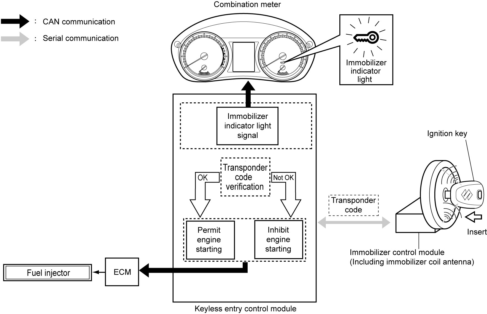

10C
| Immobilizer Control System Introduction |
When the ignition switch is turned to “ON”, the immobilizer coil antenna receives transponder code from the ignition key.
The immobilizer coil antenna then transmits the transponder code thus received to keyless entry control module by means of serial communications.
Keyless entry control module compares this transponder code with the transponder code that has already been registered in keyless entry control module.
•If both transponder codes agree, keyless entry control module sends engine start permission signal to ECM via CAN communication.
•If both transponder codes do not agree, keyless entry control module sends engine start prohibition signal to ECM via CAN communication.
•If both transponder codes do not agree, keyless entry control module sends engine start prohibition signal to ECM via CAN communication.
Upon receipt of the engine start prohibition signal, ECM causes fuel injection and ignition to be suspended, thereby prohibiting the engine from starting.
At the same time, keyless entry control module or ECM sends a signal to the combination meter, requesting illumination or blinking of the immobilizer indicator light. The driver is then alerted to presence of an abnormal condition by lighting or blinking of the immobilizer indicator light.
The immobilizer control system on some models includes an ID controller.
When the ignition switch is turned ON, ECM executes verification with the ID controller at the same time as the above operation and judges whether to start up the engine or not. (In addition to the above operation, keyless entry control module or ECM also turns the immobilizer indicator light ON and OFF when some trouble is detected in the immobilizer control system including ID controller.)

 "Expand image")